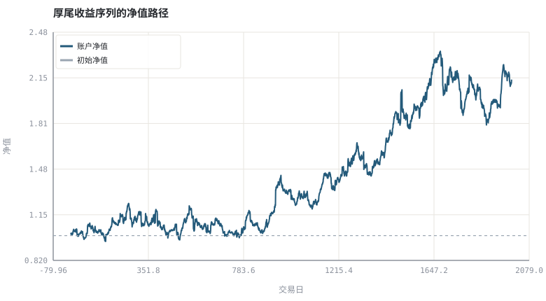
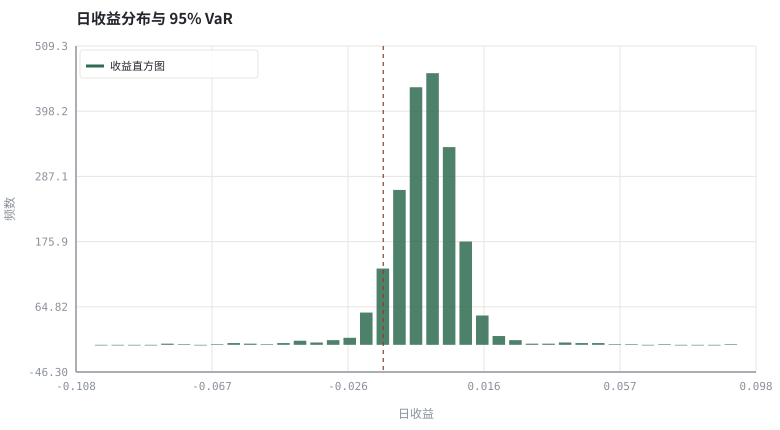

第 02 章收益与风险的可计算定义
波动、回撤、VaR、CVaR 与厚尾：把「感觉很险」换成一组能写进代码的量。
本章位置：第 01 章给出收益口径，本章给出风险口径；两者合起来才能定义第 13 章的夏普比率与第 27 章的绩效归因。
标准差是平均延迟，VaR 是 P95 延迟，CVaR 是超时请求的平均耗时，MDD 是最长的一次故障持续时间，峰度是「长尾请求有多离谱」。只监控平均值的 SRE 会漏掉事故，只监控波动的投资者也一样。
- 能用 Python 计算简单收益、对数收益、年化收益与年化波动。
- 能解释最大回撤为何比标准差更贴近持有体验。
- 能计算历史 VaR / CVaR，并说明正态假设下会低估什么。
- 能从偏度、峰度与分位数识别厚尾。
§知识点地图
每个知识点都配了 1～2 个扩展学习链接；本章完整资源清单见 扩展学习。
| # | 知识点 | 扩展学习 | 状态 |
|---|---|---|---|
| 1 | 简单收益与对数收益 | Rate of return · Logarithmic return | 正文已覆盖 |
| 2 | 年化与波动 | Rate of return · Compound interest | 正文已覆盖 |
| 3 | 标准差与正态分布 | Normal distribution · Heavy-tailed distribution | 正文已覆盖 |
| 4 | 偏度与峰度 | Normal distribution · Heavy-tailed distribution | 正文已覆盖 |
| 5 | 厚尾与极端行情 | Heavy-tailed distribution · Skewness / kurtosis | 正文已覆盖 |
| 6 | 最大回撤 | Drawdown (economics) · Calmar ratio | 正文已覆盖 |
| 7 | VaR 与 CVaR | Value at risk · Expected shortfall (CVaR) | 正文已覆盖 |
| 8 | 风险度量 | Modern portfolio theory · Value at risk | 正文已覆盖 |
§2.1收益的两种写法
r_t = P_t / P_(t−1) − 1 | R_t = ln(1 + r_t) | ∑R_t = ln(V_T / V_0)
简单收益可以横向（同一期不同资产）组合，对数收益可以纵向（同一资产多期）相加。做组合权重用前者，做时间序列求和与建模用后者。混用是初学者最常见的口径 bug。
§2.2风险不是一个数
| 度量 | 定义 | 回答的问题 | 盲点 |
|---|---|---|---|
| 标准差 σ | 收益二阶矩的平方根 | 典型波动多大 | 把大涨也算作风险，忽略方向 |
| 偏度 / 峰度 | 三阶 / 四阶标准化矩 | 分布是否对称、是否尖峰厚尾 | 对样本量敏感 |
| 最大回撤 MDD | min(V_t / peak_t − 1) | 最难受的一段有多深 | 只描述历史路径的一个点 |
| VaR_95 | 收益分布的 5% 分位数 | 坏日子里至少亏多少 | 不说明超过分位后亏多惨 |
| CVaR_95 | 尾部 5% 的平均损失 | 真出事时的平均代价 | 需要足够尾部样本 |
这五个量互补：σ 描述「平时」，MDD 描述「路径」，VaR/CVaR 描述「尾部」，偏度峰度描述「分布形状」。只报夏普比率而不看 MDD 与 CVaR，就像只报平均延迟不看 P99。
§2.3厚尾：正态假设为什么危险
用混合正态可以构造最直观的厚尾：95% 的概率来自低波动分布，5% 来自高波动分布。两套分布的均值与标准差可以几乎一样，但 5% 分位数相差很远。这意味着基于 σ 的 VaR 会系统性低估极端损失，而杠杆、保证金与强平恰好发生在尾部。
本章脚本用 random.gauss 合成数据；真实市场还存在波动聚集、跳空与流动性枯竭，尾部比混合正态更厚。所有度量都应配合压力测试使用。
§Python 分析实例
实验 2-1 · 厚尾样本下的收益与风险度量
#!/usr/bin/env python3
# -*- coding: utf-8 -*-
"""混合正态生成 2000 个日收益，计算全套风险指标并画净值与收益直方图。
数据为合成数据或模型示意，仅用于教学，不构成投资建议。
"""
from __future__ import annotations
import math
import pathlib
import random
import statistics
import sys
sys.path.insert(0, str(pathlib.Path(__file__).resolve().parents[3] / "tools"))
from chart import Chart, candlestick, heatmap, BLUE, RED, GREEN, AMBER
FIG = pathlib.Path(__file__).resolve().parents[1] / "fig"
FIG.mkdir(exist_ok=True)
random.seed(7)
# ---- 参数区 ----
N = 2000 # 交易日数
MU = 0.0004 # 日均值
SIG_LOW = 0.008 # 常态日波动
SIG_HIGH = 0.035 # 尾部日波动
P_STRESS = 0.05 # 尾部状态概率
ALPHA = 0.95 # VaR 置信水平
# ---- 计算与作图 ----
rng = random.Random(7)
rets = []
for _ in range(N):
sig = SIG_HIGH if rng.random() < P_STRESS else SIG_LOW
rets.append(rng.gauss(MU, sig))
mean = statistics.fmean(rets)
sd = statistics.pstdev(rets)
skew = sum(((x - mean) / sd) ** 3 for x in rets) / N
kurt = sum(((x - mean) / sd) ** 4 for x in rets) / N - 3
equity, v, peak, worst = [], 1.0, 1.0, 0.0
for r in rets:
v *= (1 + r)
equity.append(v)
peak = max(peak, v)
worst = min(worst, v / peak - 1.0)
ordered = sorted(rets)
k = max(1, int((1 - ALPHA) * N))
var95 = ordered[k - 1]
cvar95 = statistics.fmean(ordered[:k])
normal_var = mean - 1.645 * sd
c = Chart(FIG / "02-path.svg", "厚尾收益序列的净值路径", xlabel="交易日", ylabel="净值")
c.line(range(N), equity, BLUE, label="账户净值")
c.hline(1.0, "#9aa6b2", label="初始净值")
print("净值图:", c.save())
bins = [-0.10 + i * 0.005 for i in range(40)]
counts = [0] * (len(bins) - 1)
for r in rets:
for i in range(len(bins) - 1):
if bins[i] <= r < bins[i + 1]:
counts[i] += 1
break
h = Chart(FIG / "02-tail.svg", "日收益分布与 95% VaR", xlabel="日收益", ylabel="频数")
h.bars(bins[:-1], counts, GREEN, label="收益直方图")
h.vline(var95, RED, label="历史 VaR95")
print("分布图:", h.save())
print("均值=%.5f 标准差=%.5f 偏度=%.2f 超额峰度=%.2f | MDD=%.1f%% | VaR95=%.2f%% CVaR95=%.2f%% 正态VaR=%.2f%%" %
(mean, sd, skew, kurt, 100 * worst, 100 * var95, 100 * cvar95, 100 * normal_var))操作：运行后把 P_STRESS 改成 0（纯正态），比较超额峰度、CVaR 与正态 VaR 的差距。 预期与判读：混合正态的超额峰度显著大于 0；历史 CVaR 通常比 mean − 1.645σ 更负。这就是「同样标准差、完全不同的尾部风险」的可测量证据。
改参数看趋势：把 SIG_HIGH 翻倍：σ 变化不大，但 CVaR 与 MDD 明显恶化，说明标准差不足以描述尾部。 文件位置：part0/02-return-risk/code/02-risk.py


代码块右上角可一键复制；仓库里的 code/*.py 由 tools/extract_code.py 从这些代码块自动抽取。脚本只用标准库、固定 random.seed(7)，运行后写出 fig/*.svg；批量运行用 ./tools/run_python.sh。
§本章参考资料
按本章知识点挑选的精读资料；更多检索入口见 扩展学习。
Normal distribution
百科 · 参考资料标准差、置信区间与正态假设
怎么用：标准差与置信区间的标准定义https://en.wikipedia.org/wiki/Normal_distribution
Heavy-tailed distribution
百科 · 参考资料极端行情与正态假设的失效
怎么用：厚尾分布与极端行情https://en.wikipedia.org/wiki/Heavy-tailed_distribution
Drawdown (economics)
百科 · 参考资料峰值到谷底的回撤与恢复难度
怎么用：最大回撤与恢复难度https://en.wikipedia.org/wiki/Drawdown_(economics)
Expected shortfall (CVaR)
百科 · 参考资料尾部超过 VaR 的平均损失
怎么用：期望损失（CVaR）相对 VaR 的改进https://en.wikipedia.org/wiki/Expected_shortfall
§常见误区
- 把对数收益直接乘权重算组合收益。
- 用正态 VaR 给杠杆产品设保证金，忽略厚尾与跳空。
- 只看最大回撤的一个数值，不看持续时间和恢复所需涨幅（回撤 50% 需要涨 100% 才回本）。
- 在样本不足时估计 CVaR，得到极不稳定的尾部均值。
§习题与思考
- 证明回撤 d 后需要收益率 d/(1−d) 才能回本，并用 d=0.5 验证。
- 把示例的
ALPHA改成 0.99，解释 VaR 与 CVaR 的样本量问题。 - 为什么「波动大」不等于「风险大」？举一个上行波动的例子。
§扩展学习
以下资料按本章知识点挑选，可直接精读或对照真实数据；知识点地图里每一条也挂了 1～2 个直达链接。
- Normal distribution（百科）：标准差、置信区间与正态假设
Normal distribution - Heavy-tailed distribution（百科）：极端行情与正态假设的失效
Heavy-tailed distribution - Drawdown (economics)（百科）：峰值到谷底的回撤与恢复难度
Drawdown (economics) - Python statistics（工具）：均值、方差、正态分位数等标准库实现
Python statistics - MDN · SVG（工具）：本书自绘图表所用矢量格式参考
MDN · SVG
继续扩展：在 Google Scholar 检索本章相关论文 · 在 MIT OCW 检索配套课程 · 在 arXiv 检索预印本 · 全书参考资源总表 · 附录 A 速查与链接总表
§延伸阅读与内链
- 第 13 章 · 均值-方差、有效前沿与夏普比率 把这些量组合成夏普比率与有效前沿；第 30 章 · 仓位、杠杆、VaR/CVaR 与凯利上界 用 VaR/CVaR 约束仓位。
- 想用真实数据复核，可从 参考资源 的 FRED / Stooq 下载序列后替换合成段。